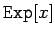
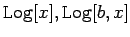
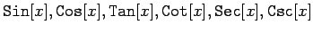
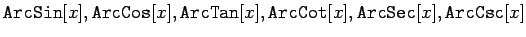
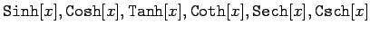
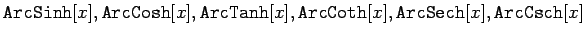

Mathematica kennt eine Vielzahl mathematischer Standardfunktionen, die in der folgenden Tabelle aufgelistet sind.
| Exponentialfunktion |  |
| Logarithmusfunktionen |  |
| Trigonom. Funktionen |  |
| Arcusfunktionen |  |
| Hyperbol. Funktionen |  |
| Areafunktionen |  |
Alle diese Funktionen sind auch für komplexe Argumente verfügbar.
In jedem Fall ist auf Eindeutigkeit der Funktionen zu achten. Bei reellen Funktionen muß gegebenenfalls ein Zweig der Funktion ausgewählt werden; bei Funktionen mit komplexem Argument ist der Hauptwert zu wählen.